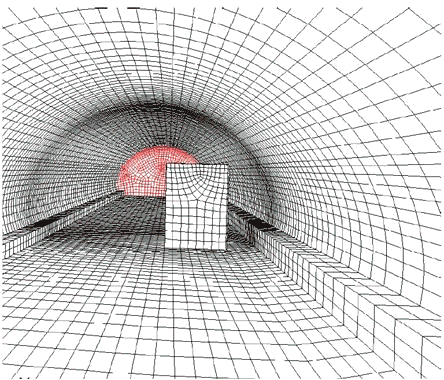

|
3. Hesaplamalý Akýþkanlar Dinamiði (HAD)
HAD yaklaþýmý temel olarak, oluþturulan modelde, modelin binlerce bazen milyonlarca küçük parçaya bölünmesi ve bölünen her parça için Navier-Stokes -ya da basitleþtirilmiþ formlarýnýn- gerçeðe en yakýn çözümünün sanal ortamda yapýlmasýdýr. HAD modellerinde genellikle model büyüklüðü konusunda herhangi bir kýsýtlama olmamasýna raðmen, model büyüdükçe gerek çözüm zamanlarý gerekse hesaplama gücü ihtiyacý artmaktadýr. Örneðin günümüz PC'leri ile iki istasyon ve aradaki tünel analiz edilebilir ancak daha fazla sayýda tünel ayný anda incelenmek istenirse o zaman küme ya da paylaþýmlý bellek bilgisayar altyapýsýna ihtiyaç duyulur. Bunun sebebi oluþturulan modellerden doðru sonuç alabilmek için modelin yeterli sayýda parçaya bölünmesi gerekliliðidir. Sayýsal að olarak tabir edilen bu bölme iþlemi sonucunda aþaðýda gösterilene benzer gridli yapýlar ortaya çýkar.
Uygun fiziksel modellerin ve sýnýr koþullarýnýn seçilmesi ile yangýn senaryosu tanýmlanmýþ olur. Senaryoda oluþturulan modele göre, yangýnýn nerede çýkacaðý, kaç MW'lýk bir yangýn olduðu, fanlarýn hangi yönde çalýþacaðý, varsa damperlerin açýsý belirlenir. Genelde en kötü durum için senaryo oluþturulur. Bu durum trenin iki istasyona da, haliyle istasyonlardaki fanlara en uzak olduðu durum için, ya da tünel eðitiminin en fazla olduðu durum için, ya da varsa makas bölgelerinde yangýnýn çýkmasý durumu için tanýmlanýr.

Yapýlan analizler ile oluþturulan her grid noktasýnda hýz, sýcaklýk, basýnç ve duman yoðunluðu deðerleri öðrenilebilir. Bu deðerler incelenirken yolcularýn tahliyesi esnasýnda yolcularýn sýcak dumana maruz kalýp kalmadýklarý ve tünel içerisindeki hýz büyüklükleri bakýlan en önemli parametrelerdir. Yangýn sonucu oluþan duman, yüksek sýcaklýðýnýn etkisi ile hafifler ve tünel tavanýna yükselir. Fanlarýn çalýþma yönü ve varsa tünelin eðimi, dumanýn hangi yöne doðru gideceðini belirler. Tahliye yönünün aksi yönde çalýþtýrýlan fanlar yeterince güçlü deðillerse, tünel içindeki toplam basýnç kaybýný yenemezler ve oluþturduklarý debi sýcak dumaný tahliye etmeyi baþaramaz. Ya da tünel içerisindeki hýz büyüklükleri kritik deðerlerin altýnda veya üstünde olabilir. Hýzlarýn kritik deðerlerin altýnda kalmasý duman difüzyonuna neden olurken, üstüne çýkmasý ise özellikle çocuklarýn yüksek bir dirence karþý ilerlemeleri gibi olumsuz bir durum doðurur.
Aþaðýdaki resimlerde 15 MW'lýk bir yangýnda yaklaþýk 800 metrelik bir tünel için 4 adet jet fan ile yapýlan havalandýrma sonucu kararlý rejime ulaþmýþ sýcaklýk daðýlýmý ve akýþ çizgileri gösterilmiþtir. Sýcaklýk konturlarý ile fanlarýn sýcak havayý nasýl emdiði açýk bir þekilde görülmektedir. Ýstasyon tavanýna yakýn olan fan hafif olduðu için yükselen sýcak havayý daha iyi emerken, alçakta duran fan ayný verimlilikte emememektedir. Bu da dumanýn bir kýsmýnýn istasyona kaçmasýna sebep olmaktadýr, çünkü fan odasý tünel ile istasyon arasýna konumlandýrýlmýþtýr. Akýþ çizgileri ise damperlerin akýþý nasýl yönlendirdiðini, varsa tüneli gitmesi gerekirken istasyona kaçýþ yapan havanýn görüntülenmesinde kullanýlýr.
Þekil 3. HAD sonuçlarý, sýcaklýk (üstte) ve akýþ çizgileri
Hesaplamalý akýþkanlar dinamiðinin tünel analizlerinde kullanýlabileceði bir baþka alan da görüþ mesafesinin hesaplanmasýdýr. Yangýn esansýnda oluþan dumanýn kaçýþ yönünün aksi yönde tahliyesi sýrasýnda kaçýþ yönüne difüze olan duman görüþ mesafesini düþüreceði için tahliyeyi de zora sokabilir. Bu amaçla yapýlan bir çalýþmada havalandýrmanýn soldan saða olduðu durum için sýcaklýk ve görüþ mesafesi konturlarý aþaðýda gösterilmiþtir.

Þekil 4.
Þekil 5. Görüþ mesafesi ve duman yoðunluðu
|